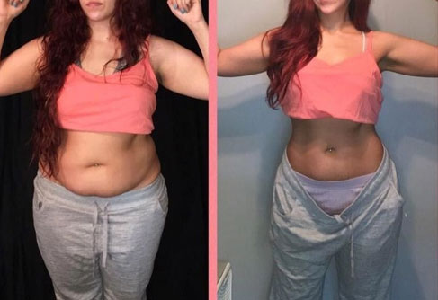

18 kg per 6 savaites

Bandymas #1
Nusipirkau brokolių, salierų, vištienos krūtinėlės ir jogurto. Buvo nesunku sekti internetinio asistento rekomendacijas: išsiaiškinau reikiamus porcijų dydžius, baltymų, riebalų ir angliavandenių kiekį, kurį reikia suvartoti per dieną, atstumą, kurį reikia nuvažiuoti, kiek pritūpimų reikia padaryti. Bet aš taip galėjau kentėti tik 5 dienas. Visi šie apribojimai, įskaitant bėgiojimą tuščiu skrandžiu ir šviežias salierų sultis, nebuvo skirti man. Buvau tokia alkana ir paniurusi, kad nuolat ginčijausi su šeima ir kolegomis ir netgi patekau į automobilio avariją. Viskas, apie ką svajojau, buvo keturių sūrių pica.

Bandymas #2
Savo tinklaraštyje parašiusi apie savo patirtį, iškart radau daug panašių į save moterų. Jos iš įvairių pasaulio šalių bandė man padėti ir pakvietė mane prisijungti prie internetinio svorio metimo iššūkio. Jos paaiškino, kad iššūkis neįprastas ir man tikrai patiks.
Svorio metimas nebuvo susijęs su dietų laikymu ar mankšta. Viskas, ką aš turėjau daryti - vartoti svorio netekimo papildą, pavadinimu .

Tai buvo sunku pavadinti iššūkiu. Buvau kupina abejonių, tačiau kitų moterų rezultatai atrodė įkvepiantys, todėl prisijungiau prie jų. Tai buvo vienas geriausių sprendimų mano gyvenime! Šešių savaičių iššūkis prabėgo tiesiog akimirksniu ir, svarbiausia, man jis buvo labai sėkmingas! Tai tikrai verta išbandyti! Pasižiūrėkite patys:
Pradžia
1 savaitė
Savaitė praėjo įprastai Namai, darbas, namai, darbas. Vienintelis dalykas, kuris skyrėsi, buvo reguliarus vartojimas. Kol kas matomų rezultatų nėra, tačiau jaučiasi, kad kažkas kitaip. Aš nustojau nuolat norėti užkandžiauti / kavos puodelio / kruasano. Nebereikia persivalgyti: suvalgiau pusę savo porcijos.

Svoris, kg: 79.600
Išmatavimai, cm: 110/89/117
2 savaitė
OHO! Jokio bėgiojimo, salierų ir brokolių, tačiau mano svoris mažėja. Aš kupina entuziazmo ir džiaugsmo! Dingo nemiga, galvos skausmai ir dirglumas. Nustojau valgyti kaip arklys, bet nesu alkana. Net nemaniau, kad tai įmanoma.
Iki šiol numečiau 4 kg. Vargu ar galite pastebėti mano kūno išvaizdos pokyčius, bet mano veidas tikrai atrodo mažesnis.

Svoris, kg: 77.800
Išmatavimai, cm: 108/88/117
3 savaitė
Per maža būtų pasakyti, kad esu nustebusi. 5 cm mažesnis juosmuo per 3 savaites!
Jaučiuosi puikiai, nėra mieguistumo ar nuovargio. Aš turiu pakankamai energijos viskam, ką darau. Tiek darbe, tiek namuose.

Svoris, kg: 74.400
Išmatavimai, cm: 104/84/114
4 savaitės
Pusė šešių savaičių iššūkio atlikta. Aš net nepastebėjau, kaip bėga laikas, bet aš tikrai pastebėjau, kaip pasikeitė mano kūnas. Numečiau svorio per tikrai trumpą laiką. Mano drabužiai, kurie anksčiau buvo per maži, dabar man puikiai tiko. Nepaprastas jausmas! :)
Mano kolegos, draugai ir visi mane pažįstantys žmonės nuolat sako man komplimentus. Aš net šiek tiek nejaukiai jaučiuosi, bet tai reiškia, kad einu teisingu keliu. Nekantriai laukiu iššūkio pabaigos. Noriu sužinoti bendrą kilogramų kiekį, kurį numesiu.

Svoris, kg: 68.200
Išmatavimai, cm: 97/80/107
5 savaitė
Mano draugai vadina mane ragana, kai mato, kad valgau tiek, kiek jie, ir nuolat lieknėju. Aš jiems dar nesakiau apie iššūkį. Viskas puiku, išskyrus tai, kad man dabar reikia naujų drabužių. Visi mano drabužiai dabar per dideli! Aš darbe turiu laikytis aprangos kodo. Pernai nešiojau XL. Vakar nusipirkau M dydžio drabužius.

Svoris, kg: 65.300
Išmatavimai, cm: 94/78/99
6 savaitė
Pažvelgusi į save veidrodyje matau gražią moterį. Vos prieš šešias savaites ten mačiau didžiulę riebią karvę. Seni mano drabužiai verčia mane suvokti, kokia buvau riebi kiaulė!
O dabar pati svarbiausia dalis: Numečiau 18 kg! Aš sumažėjau 23 cm nuo klubų, 15 cm nuo juosmens ir 20 cm nuo krūtinės. Bet mano krūtinės dydis vis tiek nesiskiria. Dingo riebalai nuo mano nugaros ir negražios odos raukšlės virš ir po liemenėle. Ir man net nereikėjo griebtis dietų, nevalgyti ar mankštintis.

Svoris, kg: 62.400
Išmatavimai, cm: 91/74/94
Jaučiuosi kaip žvaigždė. Kiekvienas, kuris mane pažįsta, negali liautis žavėtis manimi.
Atnaujinta:
Sveikos ponios! Kiekvieną dieną gaunu šimtus laiškų iš jūsų. Jūs manęs nuolat klausiate, kas yra ir kur jį nusipirkti. Negaliu atsakyti į kiekvieną jūsų klausimą žinute, nes jūsų yra per daug. Leiskite man papasakoti apie Harmonica Linea čia.
Tai lašai, kurie skatina riebalų deginimą, nereikia jokių treniruočių. Produktą sudaro visiškai natūralūs ekstraktai, todėl jį galima įsigyti be recepto. Reikia įlašinti 20 lašų į stiklinę vandens ir gerti ryte ir vakare prieš valgį.
Šį papildą galite užsisakyti oficialioje svetainėje Ten garantuojama, kad gausite originalų produktą, o ne klastotę.
Jei kovojate su antsvoriu, negaiškite laiko. Užsisakykite šį priedą kuo greičiau. Ir parašykite atsiliepimus komentaruose, jei bandysite . Labai laukiu!
Komentarai
Maniau, kad ištrynėte savo blogą! Labai dėl jūsų džiaugiuosi!
Oho! Turbūt greit ir vestuvės!
Paprastai žiemą priaugu bent 5 kg. Šiemet priaugau dešimt! Aš užsisakysiu šį papildą iš karto. Visi tie treniruočių iššūkiai yra kankinimas! Aš net nesiruošiu bandyti!
Ar ne lengviau pasidaryti riebalų nusiurbimą ir nustoti kentėti kartą ir visiems laikams? Aš tai padariau praėjusiais metais ir esu labai laiminga. Bet, žinoma, ši procedūra nėra pigi.
Sunku patikėti, kad per mėnesį galima numesti tiek daug svorio, kai nereikia mankštos ir dietų.
Senstant tampa sunkiau mesti svorį. Mitybos apribojimai man netinka. Aš ir toliau noriu saldžių dalykų! Taigi, nusprendžiau išbandyti šį biologiškai aktyvų papildą . Jį patogu vartoti darbe ir namuose. Akimirksniu užmuša apetitą. Jau galiu matyti rezultatus. Mano svoris pamažu mažėja. Numečiau 9 kg per 6 savaites. Pažiūrėkit į mano nuotrauką:
Sveiki, vakar gavau užsakymą. Jau galiu pasakyti keletą komentarų apie jį. Labai gerai slopina apetitą! Vakar ir šiandien valgiau mažiau nei įprastai, nes jaučiausi soti. Ir miegojau kaip kūdikis. Tai man svarbu, nes vartojant kitus vaistus kankindavo nemiga.
Priaugu svorio labai greitai. Suvalgydavau kruasaną ir truputį šokolado, kitą dieną aš jau būdavau riebesnė. Po savaitės badavimo vėl atgaudavau formas. Bet taip buvo prieš tai. Dabar visai nereguliuoju mitybos. Vartoju ir nejaučiu alkio. Mano svoris dabar yra 56 kg, ir jis išliko stabilus.
Beje, riebalų nusiurbimas yra viena pavojingiausių procedūrų. Ir visai nepatikima. Viena mano draugė tai pasidarė, bet turėjo kartoti kas 3 metus. Nes kuo daugiau riebalų tokiu būdu prarasite, tuo daugiau riebalų ataugs.
Aš apsilankiau toje svetainėje ir perskaičiau daugiau apie šį maisto papildą. Jame yra tik natūralūs komponentai, todėl nusprendžiau pabandyti. Žinote, daugumoje svorio metimo produktų yra sintetinių cheminių komponentų. Anksčiau vartodavau tabletes, jos man sugadino skrandį. Tikiuosi nesukels jokio šalutinio poveikio.
Aš darbe turiu kolegę, kuri visada vartoja šį papildą po pietų. Ji numetė daug svorio. Štai kodėl daugelis kitų mano kolegių taip pradėjo tai vartoti. Ir nuolat meta svorį. Ir aš galvoju pabandyti.
tikrai veikia. Aš tai atradau prieš 6 mėnesius. Dabar neturiu problemų dėl perteklinio svorio, o prieš tai svėriau 79 kg! Jis puikiai tinka pavargusiems nuo antsvorio ir norintiems pagaliau būti liekniems.Jis neturėjo jokio neigiamo poveikio mano sveikatai. Mano hormonai ir virškinimo traktas veikia puikiai.
Ačiū už rekomendaciją. Aš jau išbandžiau įvairius metodus, tačiau negaliu numesti svorio, nesvarbu, ką darau. Tikiuosi, kad šis produktas man padės.
Aš nemačiau šio produkto parduotuvėse ar vaistinėse. Mano mieste jo greičiausiai nėra.
Apie kokias vaistines jūs kalbate? Juk sakė, kad užsisakyti galite tik oficialioje svetainėje. Vaistinėse tikriausiai parduodamos imitacijos, kurios nėra tikras . Aš jau gavau savo užsakymą ir pradėjau vartoti. Po vienos savaitės numečiau 3 kg. Tai puiki pradžia.
Vieną savaitę valgiau vien jogurtą. Bet tuo laikotarpiu jaučiausi labai blogai. Negalėjau eiti į paskaitas kolegijoje. Aš net vėmiau porą kartų, bet po visų tų kančių numečiau 7 kg.
Koks netikėtumas. Aš maniau, kad neįmanoma numesti svorio per tokį trumpą laiką. Bet kalbant apie šį papildą... Na, kiekvienas gali pasirinkti. Jei viskas natūralu, tai yra didelis privalumas!
Kartą per savaitę turiu pasninko dieną. Tai padeda man išlikti geros formos. Mano svoris yra 59 kg, man 43 metai. Galbūt ši informacija gali padėti kai kuriems iš jūsų. Visos šios kvailos dietos yra visiška nesąmonė. Priaugsi dar daugiau svorio, kai nustosi laikytis dietų.
Taip gera būti lieknai! Kiekvieną kartą galvodama apie savo ankstesnį svorį jaučiuosi tikrai blogai. Jaučiausi tokia savim nepasitikinti. Aš negalėjau žmonėms žiūrėti į akis. Jaučiausi tokia nepasitikinti savimi šalia savo kolegų. Dirbu banke ir mes taip pat turime aprangos kodą. Visos vilki S dydžio drabužius, ir aš vienintelė vilkėjau XL. Per visą gydymo kursą numečiau 27 kg! Mano kūnas susitraukė perpus, turėjau nusipirkti daug naujų drabužių. Labai rekomenduoju! !